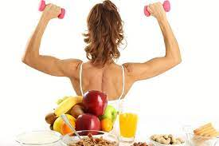
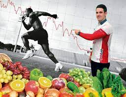
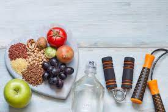
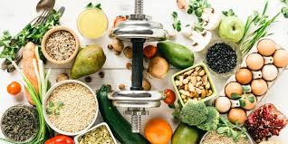

¿Qué es la nutrición deportiva?
La nutrición deportiva es la rama de la nutrición especializada en las personas que practican deporte, mediante la cual se aconseja, se guía y se educa al deportista a saber qué, cuándo y por qué se deben comer y beber ciertos alimentos u otros según la ocasión. La nutrición deportiva se basa en los criterios básicos de la alimentación equilibrada durante el día a día, para así ayudarnos a afrontar las cargas de entreno y favorecer la recuperación.¿Qué es la nutrición deportiva? La nutrición deportiva es la rama de la nutrición especializada en las personas que practican deporte, mediante la cual se aconseja, se guía y se educa al deportista a saber qué, cuándo y por qué se deben comer y beber ciertos alimentos u otros según la ocasión. La nutrición deportiva se basa en los criterios básicos de la alimentación equilibrada durante el día a día, para así ayudarnos a afrontar las cargas de entreno y favorecer la recuperación..
¿Por qué es tan importante la nutrición?
Un entrenamiento acompañado de una adecuada alimentación podrá alcanzar mayores intensidades de trabajo y duración del mismo, de la misma manera que en periodos de descanso se debe adaptar también la alimentación y así favorecer la supercompensación y adaptación al deporte. Siempre decimos que con la nutrición deportiva no se crean «supercampeones», pero sí puede haber campeones que nunca lleguen a serlo porque no se alimentan de la manera correcta..

¿Cómo influye la alimentación en el rendimiento de un deportista?
No debemos olvidar la famosa cita “somos lo que comemos”, pues una correcta alimentación nos aporta los nutrientes necesarios para mantener un estado óptimo de salud, lo que equivale a mayor rendimiento y recuperación. Según la alimentación que siga un deportista, podrá notar como su rendimiento mejora o por el contrario queda limitado o incluso disminuye, ya que una mala alimentación puede favorecer las lesiones e incluso inducir a la fatiga..

¿Qué tipo de deportes requieren una alimentación más específica?
La mayoría de deportes necesitan de una intervención dietética nutricional, destacando su especial importancia en los deportes de más de dos horas de duración y alta intensidad (trails, ultras-trails, maratones, triatlones de media y larga distancia, etc.) donde la estrategia alimentaria será clave para poder abastecerse de energía durante toda la prueba. Los depósitos de energía procedente de los hidratos de carbono son limitados y haber estudiado una pauta de alimentación nos asegurará rendir hasta el final de la prueba..
